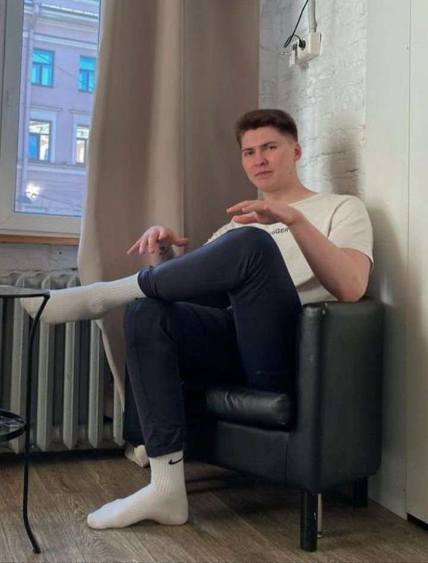
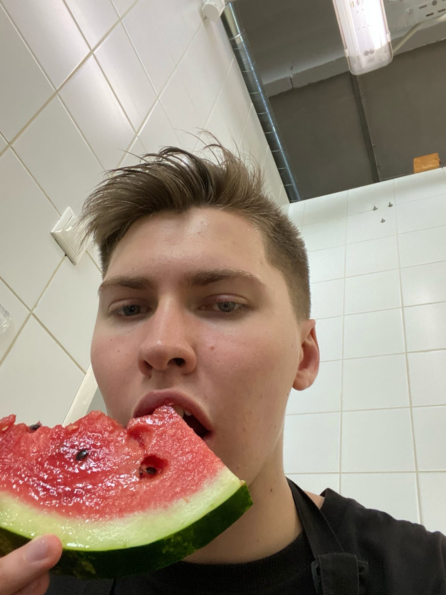
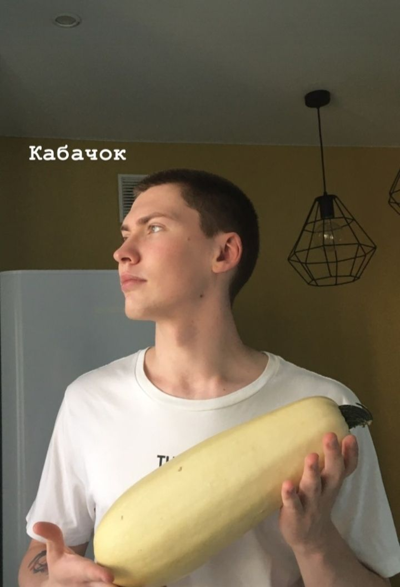
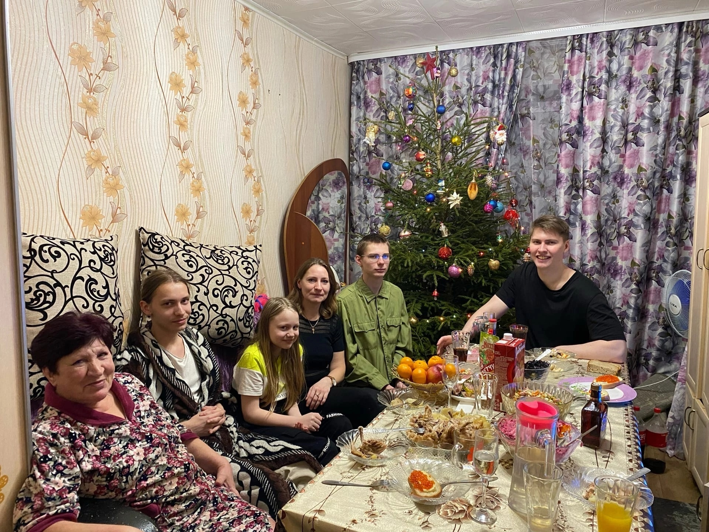

Данил Кораблев
Программист, Сын & Официант
- 
- 
- 
- 
Мой брат потрясающий. Забавно, но я не знал этого, пока не узнал, что у него день рождения. Что это скоро произойдет. Что это реально. Мне пришлось о многом задуматься. Вещи, о которых я долгое время не задумывался. Наверное, я воспринимал его как нечто само собой разумеющееся или что-то в этом роде. Я имею в виду, что наша семья просто всегда рядом. Вы ожидаете, что они всегда будут приставать к вам с просьбой прибраться в вашей комнате, или усерднее учиться, или иметь хорошие манеры, или пробовать что-то новое, чтобы однажды вырасти более всесторонне развитым человеком. И они заставляют тебя рано вставать в выходные, чтобы "провести время с семьей" и все такое прочее, что раньше сводило меня с ума. Сейчас я так не чувствую. С тех пор все изменилось. У брата день рождения. Я понял, что однажды, в ближайшем будущем, он может стать ещё старше. Это сводит меня с ума.
Теперь я чувствую себя счастливым, когда он спрашивает меня, как прошел мой день (раньше я совершенно ненавидел этот вопрос) или ворчит на меня за то, что я прихожу домой вовремя ночью. Однажды его здесь не будет, чтобы поговорить. Теперь я чувствую себя счастливым, когда слышу, как его велосипед заезжает на подъездную дорожку после университета. Мне даже нравится слушать, как он говорит о мясе. Это значит, что он все еще здесь. Все еще мой брат.


Мой брат - веб разработчик в одной компании пидараос, и он раздражающе умен. Я имею в виду, супермозглый раздражитель. Он знает самые случайные вещи. Например, как много зарабатывать, иметь успех у женщин и прочие разносторонние штуки. Он всегда опускает мелкие факты обо всем на свете. Он не осознает, какой он придурок, раз занимается этим, он просто по-настоящему увлекается жизнью. Я думаю, он действительно не понимает, что не все такие. Ему нравится есть мясо - в основном он ест только его, - потому что, по его словам: "Уга буга, я есть мясо, моя сильный я трахать женщина в задница и есть мясо, я есть мясо и делать деньги!!". Я не посещаю его на работе, но я слышал, что он лучший разработчик и прекрасно ладит с коллективом. Он получает много практики дома, это точно.
Все то время, что я учился в старшей школе (я третьекурсник), мне всегда приходилось слышать, что о нем думают другие дети. Я всегда был братом Данила. (Иногда они называют его данил-дебил, эту кличку я придумал). Некоторые дети оскорбляли его, просто чтобы подействовать мне на нервы. Некоторые дети просто презирали его, и точка, потому что так принято поступать с успешными людьми. Однако дело в том, что он ожидает, что все будут стараться изо всех сил так же, как и он, и когда вы не стараетесь изо всех сил, он не дает вам никаких поблажек. Вот таким он бывает дома и на работе. Я только сейчас понял, какое это хорошее качество. Это то, что делает его храбрым в борьбе с возрастом, и то, что делало храбрым и меня, когда я был моложе. Хотел я этого или нет. В любом случае, я всегда хотел быть обычным ребенком в школе, но из-за того, что мой брат был звездой всей тверской области, я был другим. Теперь я понимаю две вещи. Во-первых, я уже другой, потому что у меня есть аутизм, так что дело сделано. И, во-вторых, он подходящий брат для меня. Я не могу заниматься многими социальными активностями упражнениями из- за своей инвалидности, и это нормально для моего брата, чего не было бы со многими другими братьясм, которых я встречал. Они были бы разочарованы, потому что увлекаются общением или чем-то еще. Я имею в виду, что у моего брата нет инвалидности, но вы бы точно не захотели увидеть, как он бросает футбольный мяч или общается с женщинами. Так что, таким образом, мы ладим. В том, что он мой брат, а я его брат, есть смысл. Я хочу сказать, что меня больше не волнует, что говорят люди. Суть в том, что он хороший разработчик, и никто не может сказать, что ему наплевать на то, что он делает. Я знаю, что ему не все равно. После нашей семьи, разработка и игра в боулинг и доту - это то, что он любит больше всего. Я действительно хочу быть уверен, что он сможет продолжать заниматься тем, что ему нравится, в течение длительного времени. Для него, для его коллег, а также для меня и моей семьи.
Что за чудесный день.
Но у него проблемы.
Это возраст.
Ему нужна помощь. Сейчас!